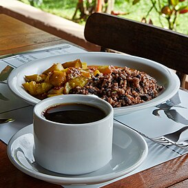

Odin Recipes
Gallo Pinto

Gallo Pinto: Traditional dish from Central America. Consisting of rice and beans as a base, gallo pinto has a long history and is important to Nicaraguan and Costa Rican identities and cultures
Ingredients
- 2 tablespoons light-tasting oil
- 1 red bell pepper , chopped
- 1 small yellow onion , chopped
- 2 cloves garlic , minced
- 2 cups cooked black beans , in ¾ cup reserved cooking liquid
- ¼ cup Salsa Lizano
- 3 cups cooked rice , preferably, day-old and refrigerated
- ¼ cup chopped fresh cilantro
Steps
- Heat oil in a large skillet over medium-high heat until shimmering. Sauté chopped bell pepper and onions until peppers are soft and onions are translucent, about 6-8 minutes. Add minced garlic and cook for 1 minute, until fragrant.
- Add black beans, reserved cooking liquid, and Salsa Lizano, stirring to combine. Simmer for 5 minutes, until slightly thickened and little bit of the liquid is evaporated. Gently stir in cooked rice and cook until heated through and most of the liquid is absorbed, about 3-5 minutes.
- Stir in chopped cilantro. Season to taste with additional Salsa Lizano, if desired, and serve.